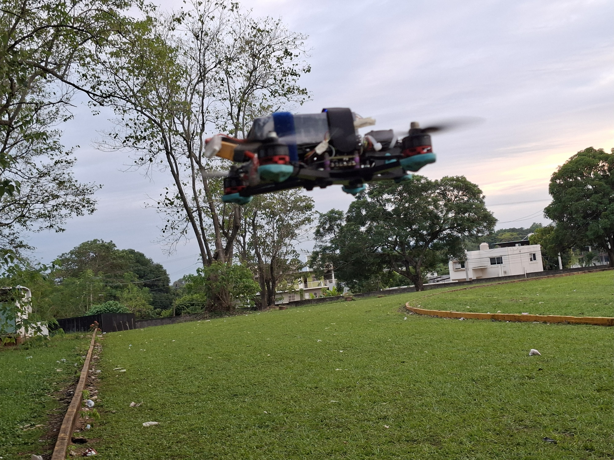
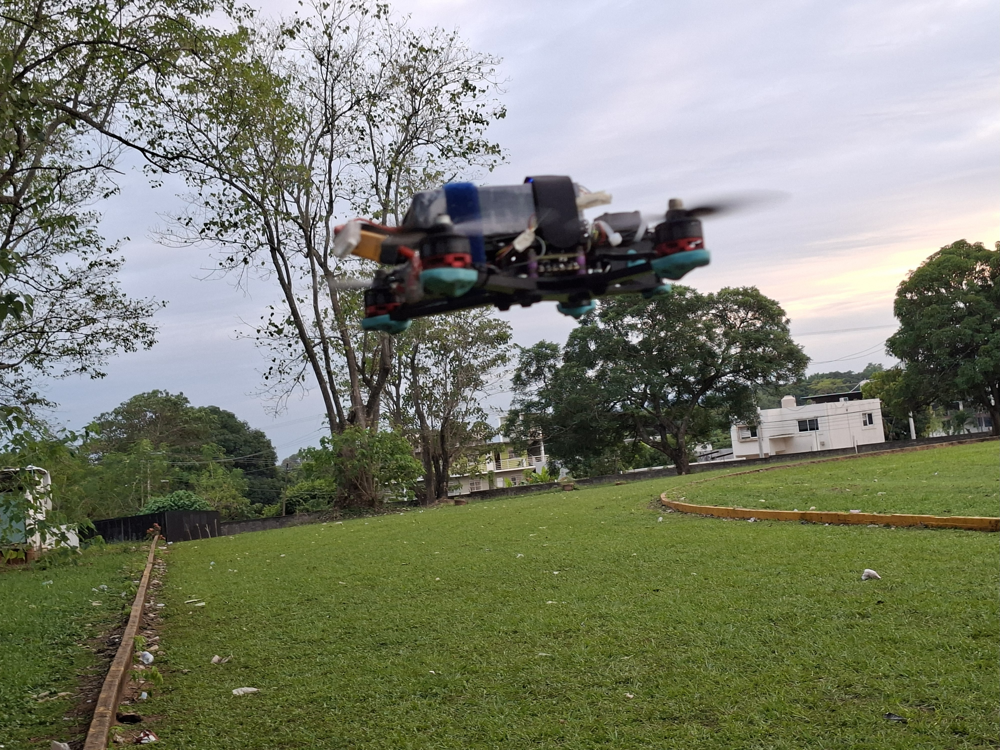

Bienvenidos
Bienvenido a TENOCH, un proyecto de drone FPV diseñado para alto rendimiento, innovación y desarrollo tecnológico. Nuestro propósito es crear un dron estable, potente y construido con ingeniería de precisión.
Sobre el Proyecto
TENOCH es un dron FPV ensamblado por el equipo Cuahucalli. Su diseño combina aerodinámica, electrónica optimizada y componentes de alto desempeño para lograr una experiencia de vuelo fluida, rápida y estable.
Especificaciones
Frame de 5 pulgadas fabricado en fibra de carbono, controladora de vuelo F405, motores de 2300KV, sistema FPV de baja latencia en HD y electrónica configurada para un gran desempeño. Próximamente compartiremos el desglose completo.
Descargas
Especificaciones Tecnicas Manual de usuarioManual de especificaciones técnicas
Manual de usuario
Contacto
Teléfono: 9518989141 ó 2871384799
Ubicación: Calzada Dr. Víctor Bravo Ahuja Num. 561, Col. Predio el Paraíso,
C.P. 68350, San Juan Bautista Tuxtepec, Oaxaca
 
